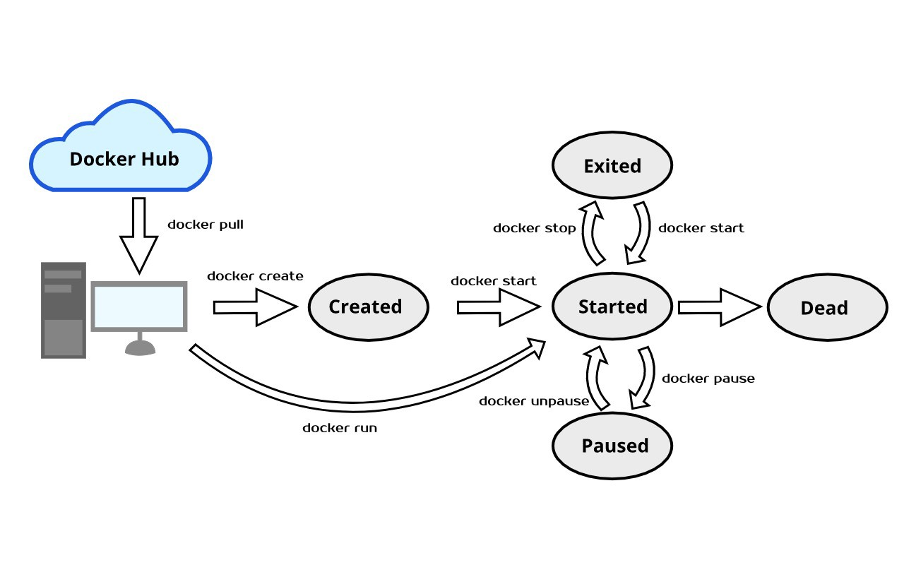

2. Docker CLI

Docker create / start / run
Docker create
docker create <image-name>
Docker start
docker start <container-id>
Options: by default, STDOUT/STDERR/STDIN are not attached to the terminal
-a, --attach → attach STDOUT/STDERR and forward signals
-i, --interactive → attach container's STDIN
Docker run = create + start
docker run <image-name> [command]
Options
- --rm → Automatically remove the container when it exits
- --name string → Assign a name to the container
- -i, --interactive → attach container's STDIN
- -t → Allocate a pseudo-TTY (± STDOUT/STDERR)
- -p localPort:containerPort → incoming requests routing
- -v <local-filesystem>:<container-filesystem> → volume creation
- -v <container-filesystem> → this subtree is only owed by the container (excluded from another volume)
Docker exec
Run a command in a running container.
docker exec <container-id> <command>
Options: by default, STDOUT/STDERR/STDIN are not attached to the terminal
- -i, --interactive → attach container's STDIN
- -t → Allocate a pseudo-TTY (± STDOUT/STDERR)
Docker logs
docker logs <container-id>
Options
- -f, --follow → Follow log output
Docker ps
docker ps List all of the containers that are currently running.
Options
- -a or --all Show all containers (default shows just running)
Docker stop / kill
- docker stop <container-id> → sends SIGTERM to the primary process... and after 10 seconds, SIGKILL
- docker kill <container-id> → sends SIGKILL to the primary process
Note: Ctrl+C = SIGINT
Docker rm / system prune
docker system prune the clean all command...
docker system prune -a
- docker rm [container]: Delete a particular container that is not currently running.
Docker attach
docker attach <container-id>
Attach local standard input, output, and error streams to a running container.
IMPORTANT : the process with PID 1 is choosen inside the container for attachment. Be careful if there are multiple processes inside the container!
Docker login
docker login
Log into the Docker Hub repository.
For the scripts
- echo "$DOCKER_PASSWORD" | docker login -u "$DOCKER_ID" --password-stdin
- docker login -u "$DOCKER_ID" -p "$DOCKER_PASSWORD"
Docker push
Push an image to the Docker Hub repository.
docker push username/image[:tag]
By default, latest is pushed.
IMPORTANT: an image with TWO tags needs to be pushed twice, if we want the two tags to be pushed !
Misc
- docker history [image]: Display the history of a particular image.
- docker images: List all of the images that are currently stored on the system.
- docker inspect [object]: Display low-level information about a particular Docker object.
- docker version: Display the version of Docker that is currently installed on the system.
- docker pull [image]: Pull an image from the Docker Hub repository.
- docker search [term]: Search the Docker Hub repository for a particular term.
- docker tag [source] [target]: Create a target tag or alias that refers to a source image.
Attachments
{kind=link}